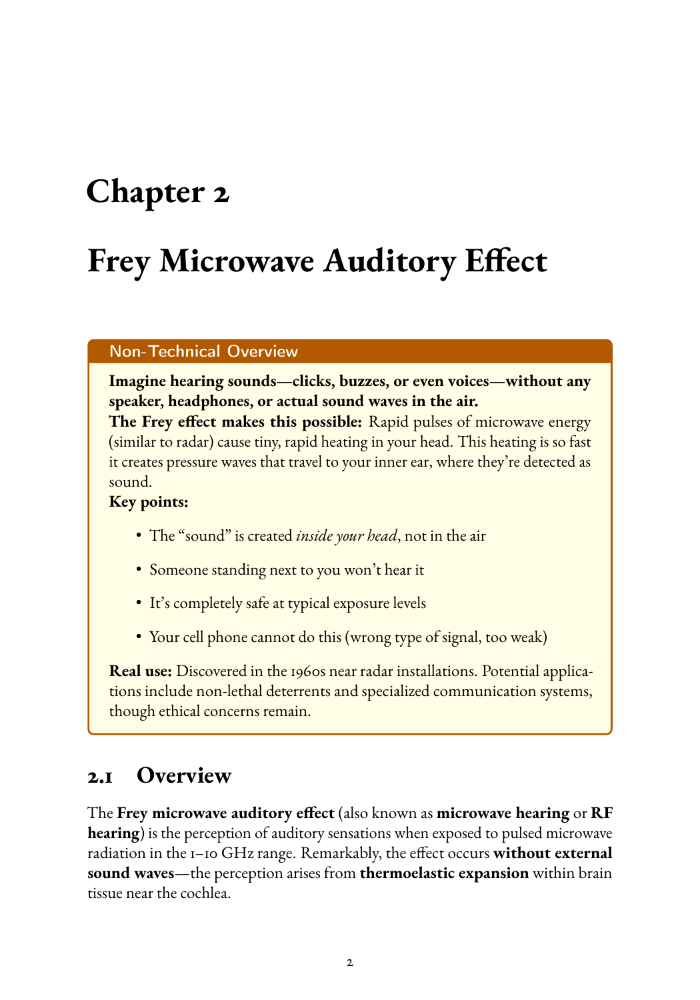
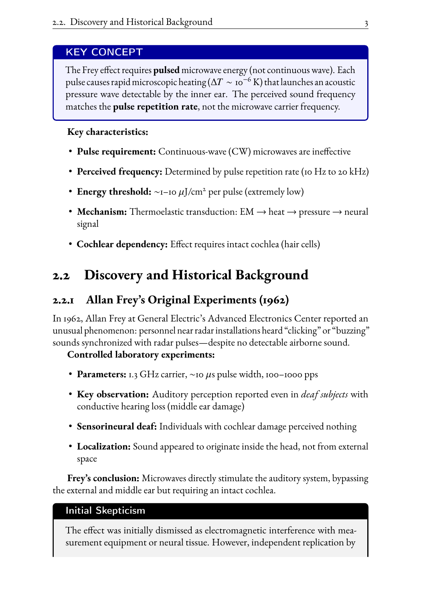
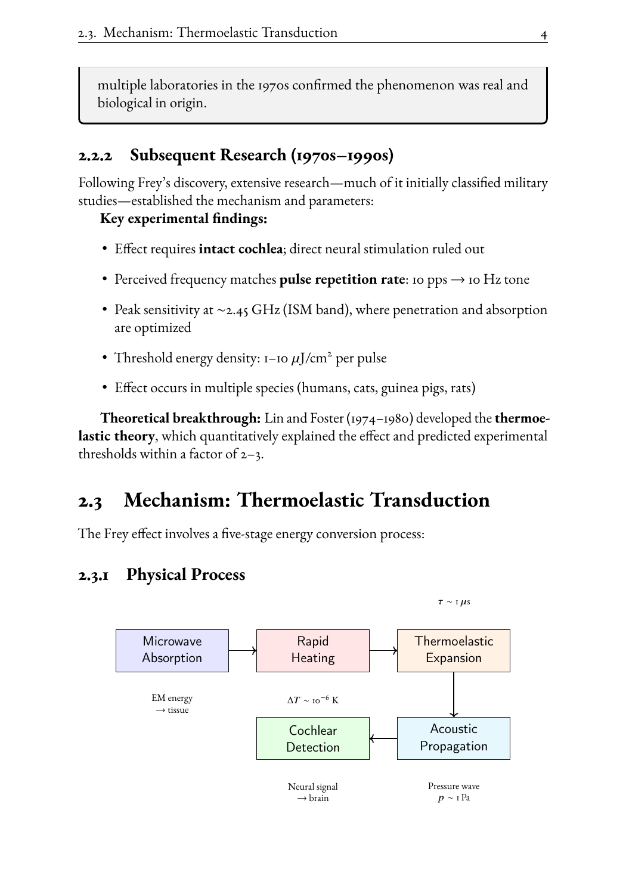
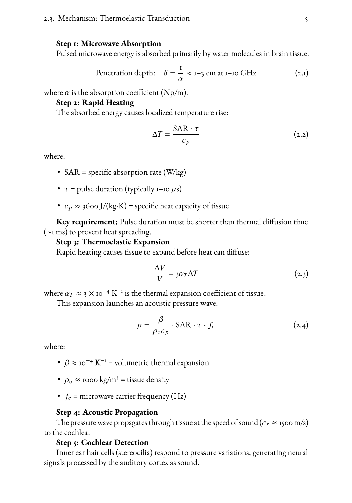
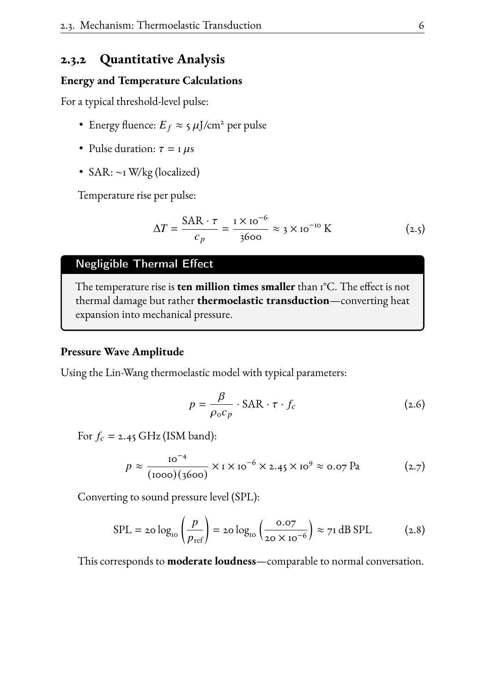
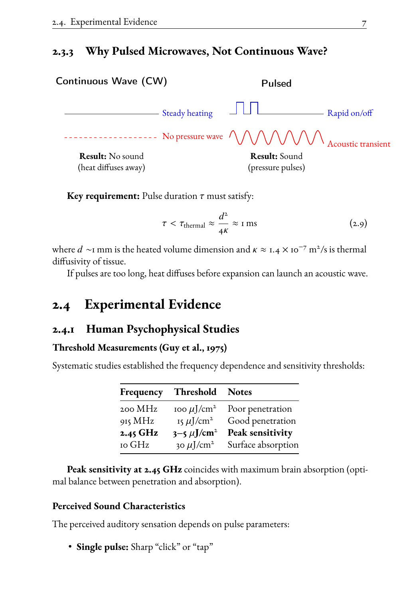
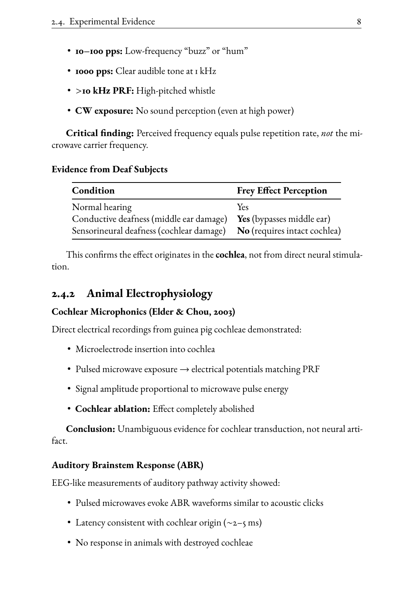
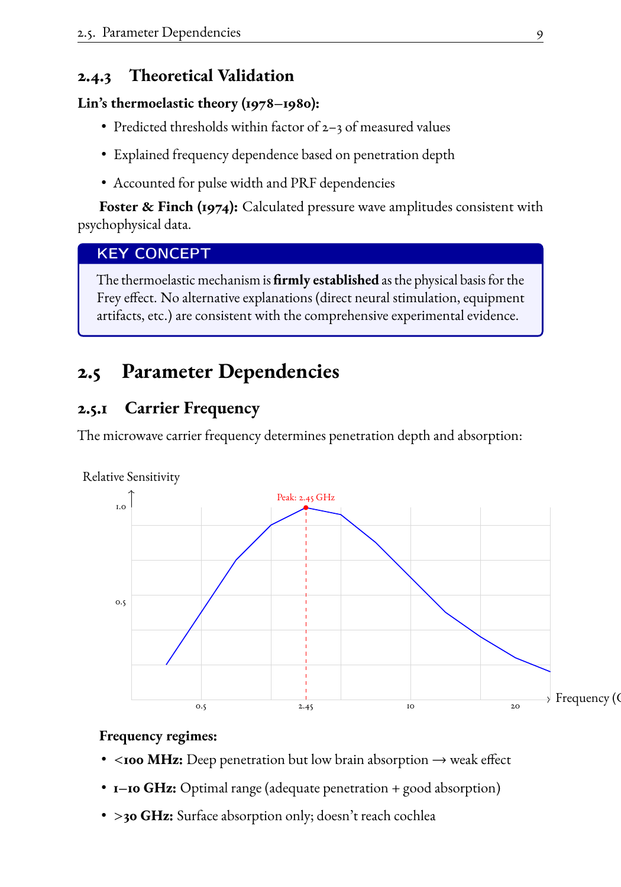
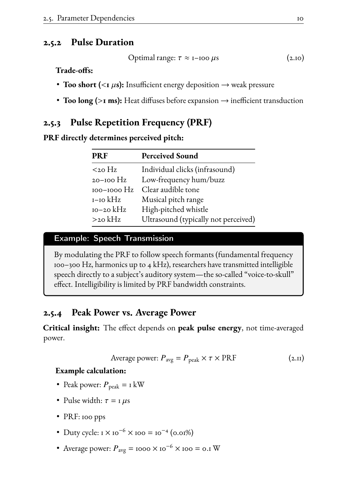

Frey Microwave Auditory Effect Chapter - Visual Review
Page 2 - Chapter Start

Page 3 - Overview

Page 4 - Mechanism Diagram

Page 5 - Equations

Page 6 - CW vs Pulsed (Has Overfull box)

Page 7 - Threshold Measurements

Page 8 - Parameter Dependencies

Page 9 - Frequency Chart (Has Overfull box)

Page 10 - More Content
